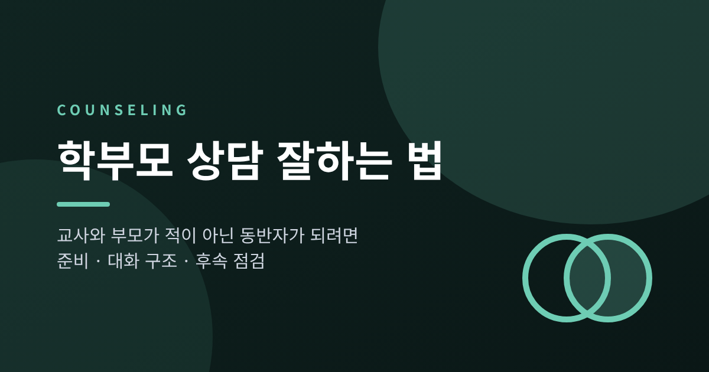
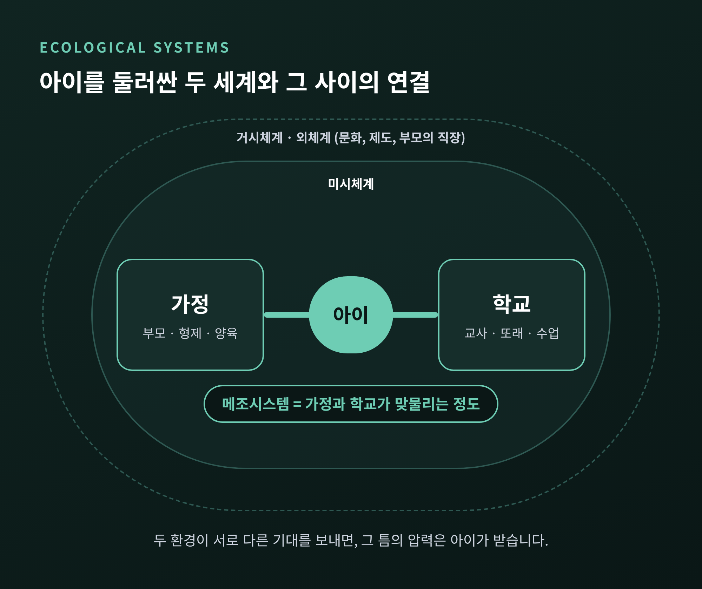
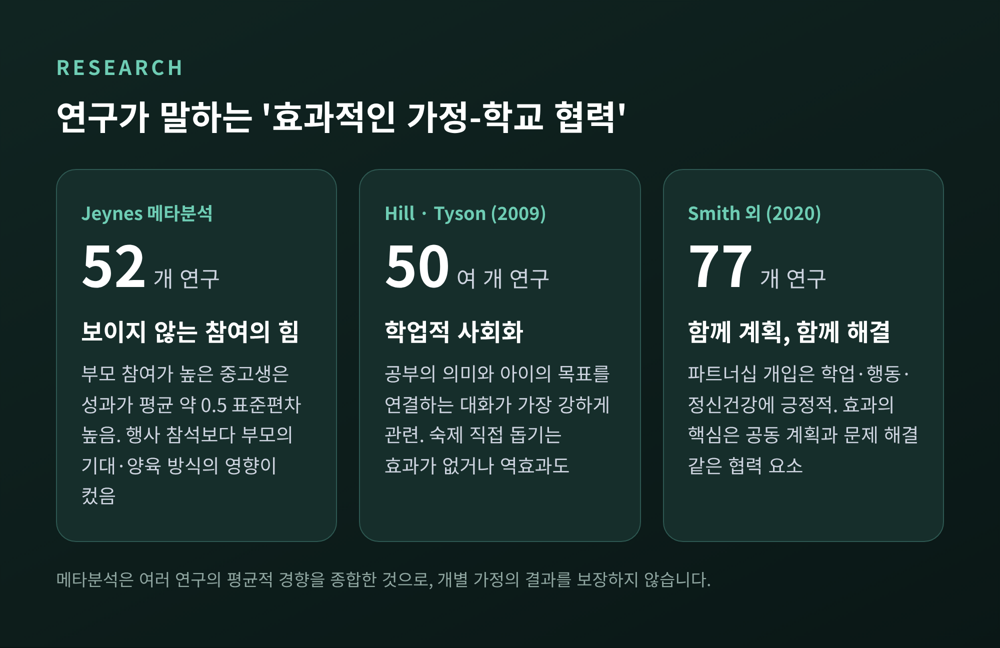
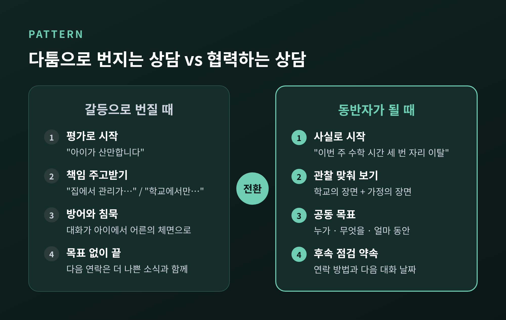
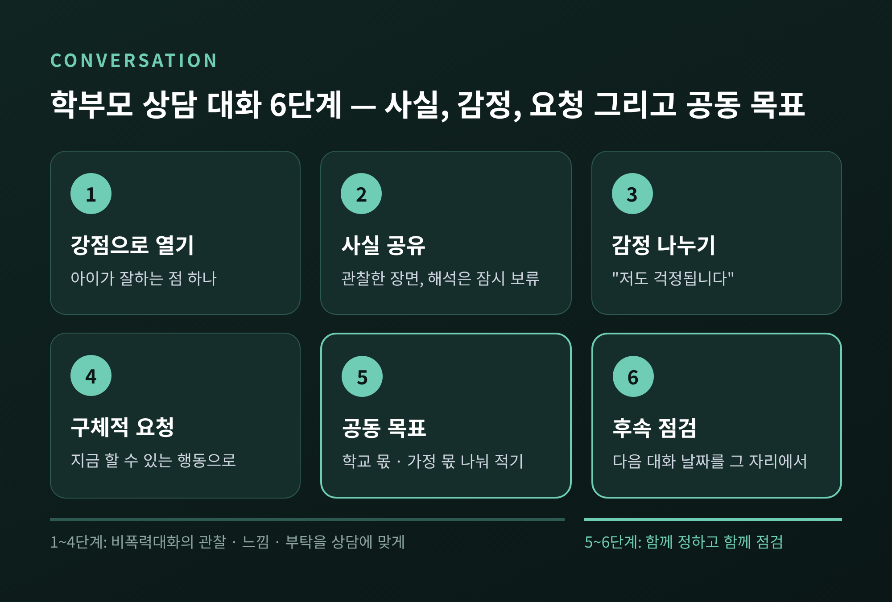
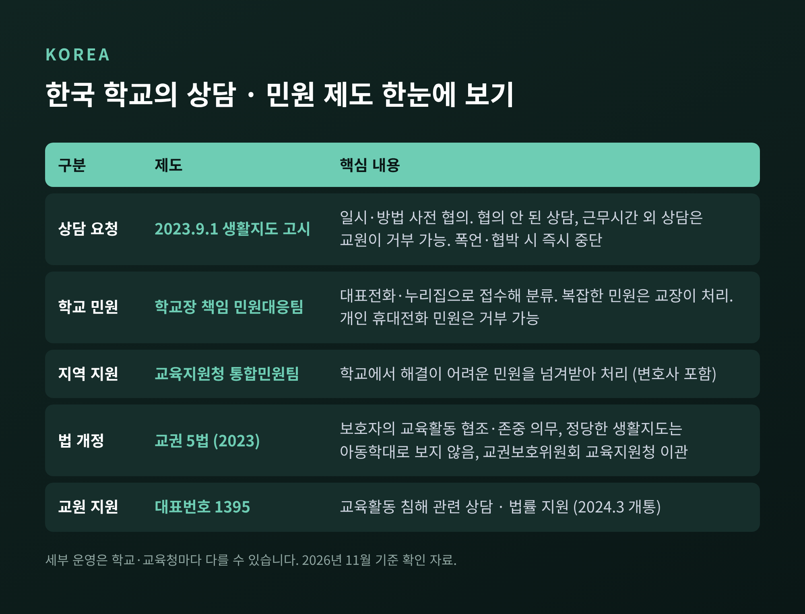

학부모 상담 잘하는 법 — 교사와 부모가 적이 아닌 동반자가 되려면

아이 문제로 학교와 이야기해야 하는 순간은 누구에게나 부담스럽습니다. 이번 글에서는 학부모 상담이 왜 자주 어긋나는지, 그리고 교사와 부모가 같은 편에 서려면 무엇을 준비하고 어떻게 말하면 좋은지를 연구와 제도를 바탕으로 정리해 보겠습니다. 학부모와 교사, 양쪽 독자를 함께 생각하며 썼습니다.
먼저 핵심부터 말씀드리면 이렇습니다.
- 가정과 학교가 함께 계획하고 함께 문제를 푸는 협력은 아이의 학업과 정서 적응에 도움이 된다는 연구가 꾸준히 쌓여 있습니다.
- 상담이 틀어지는 지점은 대개 '사실'보다 '해석과 책임'을 먼저 꺼낼 때입니다.
- 관찰한 사실 → 느낌 → 구체적 요청 → 공동 목표 → 후속 점검. 이 순서 하나만 지켜도 대화의 결이 달라집니다.
■ 아이는 두 세계 사이를 오갑니다
발달심리학자 유리 브론펜브레너는 아이를 둘러싼 환경을 여러 겹의 체계로 설명했습니다. 가족, 학교, 또래처럼 아이가 직접 부대끼는 환경을 '미시체계'라고 부릅니다. 그리고 이 미시체계들 사이의 연결을 '메조시스템'이라고 했습니다.
가정과 학교의 관계가 바로 대표적인 메조시스템입니다.
여기서 눈여겨볼 점이 있습니다. 메조시스템은 어떤 장소가 아니라 장소와 장소가 얼마나 잘 맞물리는가, 즉 '적합도'를 뜻합니다. 집이 아무리 따뜻하고 교실이 아무리 좋아도, 두 곳이 서로 다른 기대를 보내면 아이는 그 사이에서 압력을 받습니다. 엄마는 "선생님이 너무 엄하다"고 말하고, 선생님은 "집에서 너무 풀어준다"고 생각한다면, 그 틈에 서 있는 사람은 아이 하나뿐입니다.

그래서 학부모 상담은 어른들끼리의 면담이 아닙니다. 아이가 사는 두 세계를 하나로 이어 붙이는 작업에 가깝습니다.
■ 연구는 '무엇이 효과적인 협력인가'를 말해 줍니다
부모 참여가 중요하다는 말은 흔합니다. 다만 연구를 들여다보면 어떤 참여냐에 따라 효과가 꽤 다릅니다.
Epstein의 6가지 참여 유형. 존스홉킨스대의 조이스 엡스타인과 동료들은 가정-학교 협력을 여섯 갈래로 정리했습니다. 양육, 의사소통, 자원봉사, 가정 학습, 의사결정, 지역사회 협력입니다. 이 중 상담과 직결되는 것은 '의사소통'인데, 이 틀은 학교가 알리기만 하는 것이 아니라 학교와 가정이 양방향으로 주고받는 소통을 강조합니다.
Jeynes의 메타분석. 52개 연구를 종합한 결과, 부모 참여가 높은 중고생은 성적과 학업 성과가 평균 약 0.5 표준편차 높게 나타났습니다. 흥미로운 것은 효과가 가장 컸던 요소입니다. 행사 참석이나 숙제 규칙 같은 눈에 보이는 행동보다, 부모의 기대와 양육 방식처럼 드러나지 않는 측면의 영향이 더 컸습니다. 물론 이것은 연구들의 상관관계를 모은 결과이고, 인과를 입증한 것은 아닙니다.
Hill과 Tyson의 메타분석(2009). 5만 명이 넘는 중학생 자료를 다룬 50여 개 연구를 분석했습니다. 가장 강하게 관련된 것은 '학업적 사회화'였습니다. 공부가 왜 중요한지, 지금 배우는 것이 아이의 목표와 어떻게 이어지는지 대화하는 방식입니다. 반대로 숙제를 직접 도와주는 것은 도움이 되지 않거나 오히려 역효과가 나는 경우가 있었습니다.
Smith와 Sheridan 등의 메타분석(2020). 유치원부터 고등학교까지 77개 개입 연구를 분석했습니다. 가정-학교 파트너십 개입은 학업 성취, 학업 태도, 사회·행동 역량, 정신건강에 긍정적이었습니다. 특히 효과를 낸 요소는 함께 계획하고 함께 문제를 해결하는 협력이었습니다. 일방향 통보나 단순한 학교 행사 참여는 뚜렷한 효과로 이어지지 않았습니다.

정리하면 이렇습니다. 학교에 자주 가는 것보다, 학교와 같은 목표를 놓고 함께 푸는 것이 아이에게 닿습니다. 학부모 상담이 바로 그 자리입니다.
■ 상담이 다툼으로 번지는 전형적인 순간
하버드 교육대학원의 사라 로런스-라이트풋은 수많은 학부모 면담을 관찰한 뒤, 이 자리가 양쪽 모두에게 감정적으로 무겁다고 썼습니다. 부모는 작은 의자에 앉는 순간 자신의 학창 시절을 다시 떠올립니다. 교사는 이런 대화를 따로 훈련받은 적이 드물어, 어릴 적 보았던 장면을 그대로 되풀이하기 쉽습니다. 그는 이것을 교실 속 '유령'이라고 불렀습니다. 부모는 아이에 대한 이야기와 자기 기억을 두 개의 채널로 동시에 듣는데, 두 번째 채널이 첫 번째를 덮어 버리면 대화가 엇나간다는 것입니다.
현장에서 자주 보이는 흐름은 대체로 비슷합니다.
- 해석이 사실보다 앞설 때. "아이가 산만합니다"는 평가입니다. "이번 주 수학 시간에 세 번 자리를 떠났습니다"는 사실입니다. 평가를 먼저 들은 쪽은 방어부터 합니다.
- 책임의 공이 오갈 때. "집에서 관리가 안 되는 것 같아요"와 "학교에서 우리 아이만 지적하는 것 같아요"가 맞붙으면, 대화는 아이에서 어른의 체면으로 옮겨 갑니다.
- 목표 없이 끝날 때. 서로의 걱정만 확인하고 헤어지면, 다음 연락은 대개 더 나쁜 소식과 함께 옵니다.

가상의 사례 하나를 들어 보겠습니다. 초등학교 3학년 아이가 쉬는 시간마다 친구와 다툰다는 연락을 받은 부모가 있습니다. 첫 통화에서 교사는 "또래 관계에 문제가 있어 보인다"고 말했고, 부모는 "집에서는 전혀 그렇지 않다"고 답했습니다. 두 문장 모두 진심이었지만, 대화는 거기서 멈췄습니다. 두 번째 면담에서는 달랐습니다. 교사는 2주 동안 다툼이 있었던 요일과 상황을 적어 왔고, 부모는 아이가 요즘 잠드는 시간이 늦어졌다는 사실을 꺼냈습니다. 두 사람은 그날 처음으로 같은 그림을 보았습니다.
양쪽 모두에게 한 가지 사정이 더 있습니다. 교사는 신학기에 여러 명의 학부모를 연달아 만나며 큰 피로를 느끼고, 때로는 상담이 자신에 대한 평가처럼 느껴진다고 말합니다. 부모는 내 아이가 '문제아'로 낙인찍힐까 두려워합니다. 서로의 긴장을 알아차리는 것만으로도 첫 문장의 온도가 달라집니다.
■ 상담 전에 준비할 것 — 관찰한 사실을 적어 두기
좋은 상담은 만나기 전에 절반이 결정됩니다. 하버드 가족연구프로젝트(HFRP)가 정리한 상담 안내를 바탕으로, 양쪽의 준비를 나눠 보겠습니다.
학부모라면 - 아이의 과제, 성적, 알림장을 미리 훑어봅니다. - 아이와 학교생활에 대해 편하게 이야기해 봅니다. - 아이를 아는 다른 어른(조부모, 방과후 선생님 등)의 이야기도 들어 둡니다. - 집에서 본 것을 '언제, 어디서, 무엇을' 기준으로 짧게 적습니다. - 묻고 싶은 질문을 두세 개로 추립니다.
교사라면 - 학생의 과제와 기록을 다시 보고, 부모에게서 무엇을 듣고 싶은지 생각합니다. - 다룰 안건을 미리 정리합니다. - 칭찬할 점 하나를 반드시 준비합니다. - 가능하면 사적인 공간을 마련합니다. HFRP는 아이용 작은 의자 대신 성인용 의자를 둥글게 놓으라고 권합니다.
메모는 판단이 아니라 장면이어야 합니다. "숙제를 안 한다"보다 "이번 주 다섯 번 중 두 번 제출"이 대화를 훨씬 단단하게 만듭니다.
■ 대화의 뼈대 — 사실, 감정, 요청 그리고 공동 목표
마셜 로젠버그의 비폭력대화는 말을 관찰, 느낌, 욕구, 부탁의 네 요소로 나눕니다. 핵심은 관찰을 평가와 섞지 않는 것, 그리고 부탁을 강요와 구분하는 것입니다. 이 틀을 학부모 상담에 맞게 다듬으면 다음과 같은 순서가 됩니다.
- 강점으로 열기. 아이가 잘하고 있는 점 하나로 시작합니다.
- 사실 공유. 각자 관찰한 장면을 꺼냅니다. 해석은 잠시 미룹니다.
- 감정 나누기. "저도 걱정이 됩니다", "솔직히 당황스러웠습니다"처럼 마음을 짧게 말합니다.
- 구체적 요청. "더 신경 써 주세요" 대신 "다툼이 생기면 그날 알림장에 한 줄 적어 주실 수 있을까요?"처럼 지금 할 수 있는 행동으로 말합니다. 상대가 거절하거나 조정할 여지도 남겨 둡니다.
- 공동 목표 정하기. 누가, 무엇을, 얼마 동안 할지 정합니다. 학교에서 할 일과 집에서 할 일을 나눠 적습니다.
- 후속 점검 약속. 연락 방법과 다음 대화 날짜를 그 자리에서 정합니다.

예전에는 상담이 '문제를 통보받는 자리'로 여겨지곤 했습니다. 지금 연구가 가리키는 방향은 '함께 계획을 세우는 자리'입니다. HFRP 안내도 상담 후 각자 할 일을 글로 남기고, 몇 달 안에 적어도 한 번은 다시 이야기할 날을 잡으라고 권합니다. 그리고 상담에서 나눈 이야기를 아이에게도 전하고, 아이의 생각을 들어 보라고 덧붙입니다. 아이 역시 이 협력의 당사자이기 때문입니다.
교사에게 덧붙이는 팁. 문제만 알리는 연락은 관계를 마모시킵니다. Hill은 학교와 가정의 소통이 아이의 강점과 배우는 내용까지 다뤄야 한다고 권했습니다. 평소 좋은 소식을 짧게라도 전해 둔 교사의 어려운 연락은, 훨씬 부드럽게 받아들여집니다.
학부모에게 덧붙이는 팁. 숙제를 대신 붙잡고 앉기보다, 공부가 아이의 꿈과 어떻게 이어지는지 대화하는 편이 연구상 더 도움이 됩니다. 선생님께는 "집에서 제가 무엇을 하면 좋을까요?"라고 물어보시길 권합니다. 그 한 문장이 상담을 공동 작업으로 바꿉니다.
■ 한국 학교에서 알아 두면 좋은 제도
한국에서는 2023년을 기점으로 학부모 상담과 민원을 둘러싼 제도가 크게 바뀌었습니다. 제도를 알면 서로의 경계를 존중하기가 쉬워집니다.
학부모 상담주간. 많은 학교가 3월 학부모총회 이후 상담을 시작합니다. 고등학교는 연 2회 상담주간을 두는 경우가 많고, 대면뿐 아니라 전화·화상 상담도 자리 잡았습니다. 운영 방식은 학교마다 다르니 가정통신문을 확인하시는 편이 정확합니다.
상담은 사전 예약으로. 2023년 9월 1일부터 적용된 교육부 「교원의 학생생활지도에 관한 고시」는 교원, 학생, 보호자 누구나 상담을 요청할 수 있되 일시와 방법을 미리 협의하도록 했습니다. 협의되지 않은 상담, 직무 범위를 벗어난 상담, 근무시간 외 상담은 교원이 거부할 수 있습니다. 폭언·협박·폭행 등으로 상담을 이어 가기 어려우면 즉시 중단할 수도 있습니다.
민원은 학교 창구로. 같은 해 8월 교육부의 교권 보호 종합방안에 따라 학교장 책임 아래 민원대응팀이 꾸려졌습니다. 대표전화나 누리집으로 들어온 민원을 팀이 분류하고, 담임 협조가 필요한 사안은 담당 교사에게, 복잡한 사안은 교장이 맡는 구조입니다. 학교에서 해결이 어려운 민원은 교육지원청 통합민원팀으로 넘어갑니다. 교원은 개인 휴대전화로 오는 민원 응대를 거부할 수 있습니다.
법 개정. 2023년 9월 국회는 초·중등교육법, 교원지위법, 교육기본법, 유아교육법 개정안을 처리했고, 12월 아동학대처벌법 개정까지 더해 흔히 '교권 5법'이라고 부릅니다. 보호자가 학교의 정당한 교육활동에 협조하고 존중해야 한다는 조항, 교원의 정당한 생활지도는 아동학대로 보지 않는다는 조항 등이 담겼습니다. 교권보호위원회는 2024년 3월부터 학교에서 교육지원청으로 옮겨졌습니다.

숫자도 하나 짚어 두겠습니다. 교권보호위원회 개최 건수는 2022학년도 3,035건에서 2023학년도 5,050건으로 늘었습니다. 교육부 집계로 2024년 3월 말부터 6월까지의 교육활동 침해 가운데 보호자에 의한 비율은 10.7%였습니다. 대다수 학부모와는 무관한 수치이지만, 교사들이 상담 앞에서 긴장하는 이유를 이해하는 데는 도움이 됩니다.
제도에는 한계도 있습니다. 고시는 보호자의 협력을 강제할 수단을 두지 않았고, 민원대응팀이 있어도 개인 연락처나 앱으로 직접 연락이 오는 경우가 여전하다는 현장의 지적이 있습니다. 결국 제도는 최소한의 울타리이고, 울타리 안의 관계는 사람이 만듭니다.
■ 혼자 감당하기 어려울 때는
상담만으로 풀리지 않는 문제도 있습니다. 가정의 어려움, 깊은 정서 문제, 반복되는 갈등은 교사 한 사람이나 부모 한 사람이 감당할 몫을 넘어섭니다. 그럴 때는 전문가의 도움을 받는 것이 아이를 위한 가장 현실적인 선택입니다.
- Wee클래스: 학교 안에 있는 상담실입니다. 학생의 어려움을 일찍 알아차리고 돕는 1차 창구입니다.
- Wee센터: 교육지원청에 있으며, 학교에서 다루기 어려운 학생에게 진단·상담·치유를 지원합니다.
- 청소년상담1388: 9~24세 청소년과 그 부모·보호자가 전화나 온라인으로 24시간 상담받을 수 있고, 필요한 기관으로 연결도 해 줍니다. 지역마다 운영되는 청소년상담복지센터와도 이어집니다.
- 교원이라면 1395: 교육활동 침해와 관련해 전국 교원이 상담과 법률 지원을 받을 수 있는 대표번호입니다.
아이에게 자해나 위험한 징후가 보인다면 망설이지 말고 위 기관이나 의료기관에 바로 도움을 요청하시길 바랍니다.
끝으로 한 마디만 더 드리겠습니다.
상담실 탁자를 사이에 두고 앉으면, 우리는 쉽게 마주 보는 자리에 섭니다. 하지만 정말 마주 보아야 할 것은 서로가 아니라 아이의 다음 한 걸음입니다.
"같은 아이를 걱정하는 두 어른은, 같은 편입니다."
다음 상담에서 무엇을 먼저 꺼내야 하냐고 물으신다면, 아이가 요즘 잘하고 있는 한 가지라고 답하겠습니다.
참고 자료
- NNPS (Johns Hopkins University) — Six Types of Involvement: https://nnps.jhucsos.com/nnps-model/school-model/six-types-of-involvement-keys-to-successful-partnerships/
- Ohio Families Engage — What is family engagement? Six Types: https://ohiofamiliesengage.osu.edu/resources/what-is-family-engagement-six-types/
- Jeynes, Parental Involvement and Secondary School Student Educational Outcomes (Global Family Research Project 아카이브): https://archive.globalfrp.org/evaluation/the-evaluation-exchange/issue-archive/evaluating-family-involvement-programs/parental-involvement-and-secondary-school-student-educational-outcomes-a-meta-analysis
- APA 보도자료 (2009) — Hill & Tyson: https://www.apa.org/news/press/releases/2009/05/education-goals
- Harvard GSE — The Parental Involvement Puzzle: https://www.gse.harvard.edu/ideas/usable-knowledge/09/10/parental-involvement-puzzle
- Edresearch Australia — Family engagement annotated reference list (Smith et al. 2020; Sheridan et al. 2019): https://dev-jnurfc.edresearch.edu.au/sites/default/files/2021-12/family-engagement-annotated-reference-list_0.pdf
- University of Stavanger — Skole-hjem partnerskap (2022): https://playground.uis.no/sites/default/files/2022-06/FF_2022_Skole-hjem-partnerskap.pdf
- Simply Psychology — Bronfenbrenner's Mesosystem: https://www.simplypsychology.org/bronfenbrenner-mesosystem.html
- Iowa State University Pressbooks — Bronfenbrenner: https://iastate.pressbooks.pub/parentingfamilydiversity/?p=50
- ASCD Educational Leadership — Echoes of the Past (Lawrence-Lightfoot): https://www.ascd.org/el/articles/echoes-of-the-past
- Harvard Family Research Project — Parent-Teacher Conference Tip Sheets (2010): https://www.education.ne.gov/wp-content/uploads/2017/07/Parent-Teacher-ConferenceTipSheet-100610-2.pdf
- Nonviolent Communication — 4 Components of NVC: https://www.nonviolentcommunication.com/pdf_files/4_components_of_NVC.pdf
- 한국교육신문 — 학생생활지도에 관한 고시 살펴보기 (2023.11.7): https://www.hangyo.com/mobile/article.html?no=100293
- 정책브리핑 — 교원 학생생활지도 고시 보도자료 (2023.8.17): https://m.korea.kr/briefing/pressReleaseView.do?newsId=156585661
- 세계일보 — 교권보호 법안 국회 통과 (2023.9.21): https://www.segye.com/view/20230921515650
- 한국교육신문 — 교권4법 국무회의 의결 (2023.9): https://www.hangyo.com/mobile/article.html?no=99978
- 한국교육신문 — 교권5법 보완해 교육권 보장해야 (2024.5.7): https://hangyo.com/mobile/article.html?no=101572
- 한국교육신문 — '교권 5법' 시행 이후, 무엇이 달라졌는가? (2026.9.17): https://hangyo.com/mobile/article.html?no=109310
- 데일리안 — 교육부 교권회복방안 확정 발표 (2023.8.24): https://www.dailian.co.kr/news/view/1265833/
- 서울신문 — 반복된 악성 민원 교장이 처리 (2023.8.23): https://m.seoul.co.kr/news/2023/08/23/20230823500199
- 데일리안 — 서이초 사건 이후 교권보호위 개최 증가 (2024.7.18): https://www.dailian.co.kr/news/view/1384828/
- 한국교육신문 — 소통과 부담 사이…신학기 학부모 상담 어쩌나 (2026.4.8): https://hangyo.com/mobile/article.html?no=107325
- The Korea Times — Hotline on teachers' rights to open next month (2024.2.28): https://www.pressreader.com/korea-republic/the-korea-times/20240228/281569475670686
- 전북일보 — 위(Wee)프로젝트 (2013.10.3): https://www.jjan.kr/articleAmp/20131002485063
- 경인일보 — 학생 정신건강 정책 (2024.10.20): https://www.kyeongin.com/article/1714062
- 정책브리핑 — 청소년상담1388 (2024.1.11): https://m.korea.kr/news/policyNewsView.do?newsId=148924679